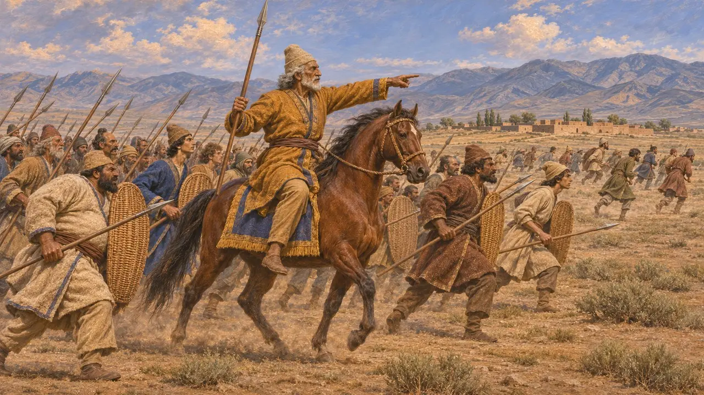
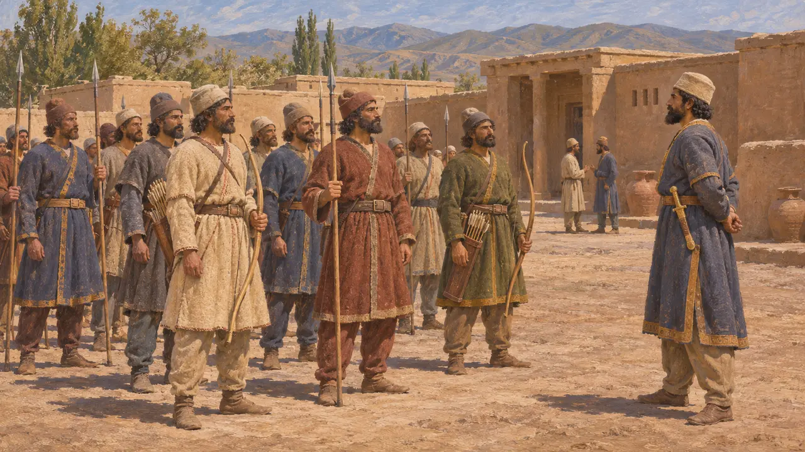
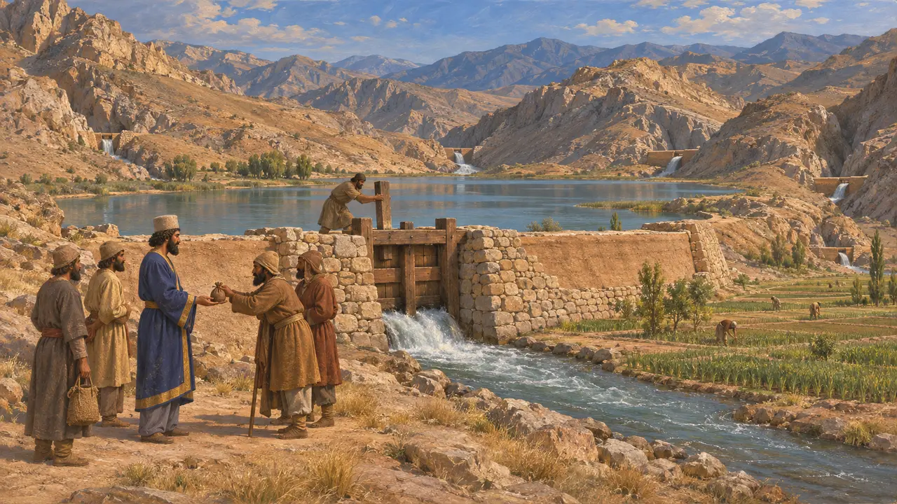
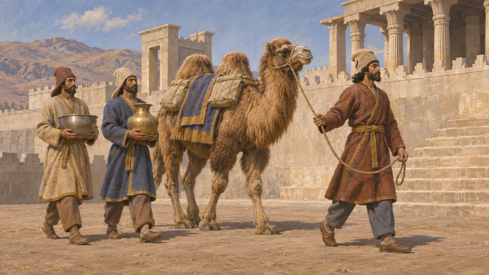

Partia
Terra a sud-est del Caspio, tenuta per Dario dal padre Istaspe nel 522-521 a.C.
La Partia, in antico persiano Parthava, si trovava a sud-est del Mar Caspio, in quello che oggi è l'Iran nord-orientale e il Turkmenistan meridionale. Nel 522-521 a.C. si sollevò insieme all'Ircania a favore di Fravartish di Media, e Istaspe, padre di Dario, che la governava, sconfisse due volte i ribelli.
Nel gioco: La Partia è menzionata nella Cronaca dei livelli di Bagastana e Parsa e nelle campagne dei generali del Re, dove Istaspe la governa per conto del figlio.

Le battaglie di Istaspe
Nelle fontiDario afferma che la Partia e l'Ircania si ribellarono e si schierarono con Fravartish. Suo padre Istaspe si trovava in Partia; combatté i ribelli a Vishpauzatish il 22 Viyakhna e vinse. Dario inviò poi truppe persiane da Raga, e Istaspe vinse ancora a Patigrabana il 1 Garmapada.
Behistun inscription §35-36


Il fiume Aces
Racconto anticoErodoto racconta di una pianura circondata da montagne ai confini dei Corasmi, degli Ircani, dei Parti, dei Sarangi e dei Tamanei, irrigata dal fiume Aces attraverso cinque gole. Riferisce che il Re sbarrò le gole con dighe e vendette l'acqua ai popoli a caro prezzo.
Herodotus 3.117

Prima dei re parti
Nelle fontiQuesta Partia achemenide non è ancora il regno partico degli Arsacidi, che sorsero intorno al 247 a.C. e in seguito governarono l'Iran. I suoi abitanti compaiono nei rilievi di Persepoli mentre portano un cammello e dei vasi.
Apadana reliefs, Persepolis; P. Briant, From Cyrus to Alexander, 2002
Fonti
- Behistun inscription §35-36
- Herodotus 3.93, 3.117, 7.66
- P. Briant, From Cyrus to Alexander, 2002